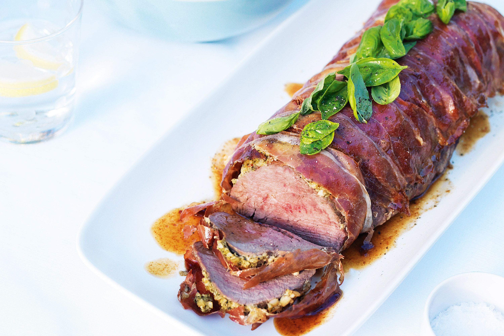

filetto di bue al prosciutto

Description
This dish is very good when served with Mashed Potatoes and Atrichokes
Domestically cured prosciutto may be purchased for this recipe; because it will be roasted along with the meat, there is no need to purchase an imported brand
Ingredients
- 2 tablespoons canola or vegetable oil
- 1 large carrot, halved lengthwise and cut into 2-inch pieces
- 1 medium size onoin, quartered
- 2 celery stalks, halved lengthwise and cut into 2-inch pices
- One 3-pound beef tenderloin
- 2 tablespoons Dijon mustard
- 1tablespoon coarsely chopped fresh rosemary leaves
- Kosher salt and freshly ground black pepper
- 12 very thin slices prosciutto
- 1 tablespoon all-purpose flour
- 1/2 cup dry red wine
- 1 cup chicken broth
Steps
- Preheat oven to 500°F. Grease a small roasting or baking pan with oil
- Arrange the carrot, onion, and celery on the bottom of the prepared pan. Place a wire rack in the pan and set aside
- Rub the beef all over with mustard. Sprinkle the rosemary, sage and salt and pepper to taste all over the beef. Place 6 to 8 8 sclieces of prosciutto, slightly overlapping, on a clean work surface.
Place the beef on top of the prosciutto. Wrap the prosciutto up and overm abd use the remaining slices of prosciutto
to completely encolse the beef. Secure the prosciutto around the beef by gently tying the roast with butcher's string
- Place the roast on the rack and cook in the oven until browned on top, about 15 minutes. Turn the roast and continuecooking until browned and medium-rare, about 15 minutes more.
Transfer meat to a platter and set aside to rest for 10 minutes before removing and discarding the string. Carve into 1-inch-thick slices
- Meanwhile, set roasting pan over high heat. Stir in the flour, wine, and broth, bring to a boil, and cook, stirring constantly, to slightly thicken the juices in the pan, about 5 minutes.
Strain through a fine-mesh sieve and spoon over the sliced roast
Home